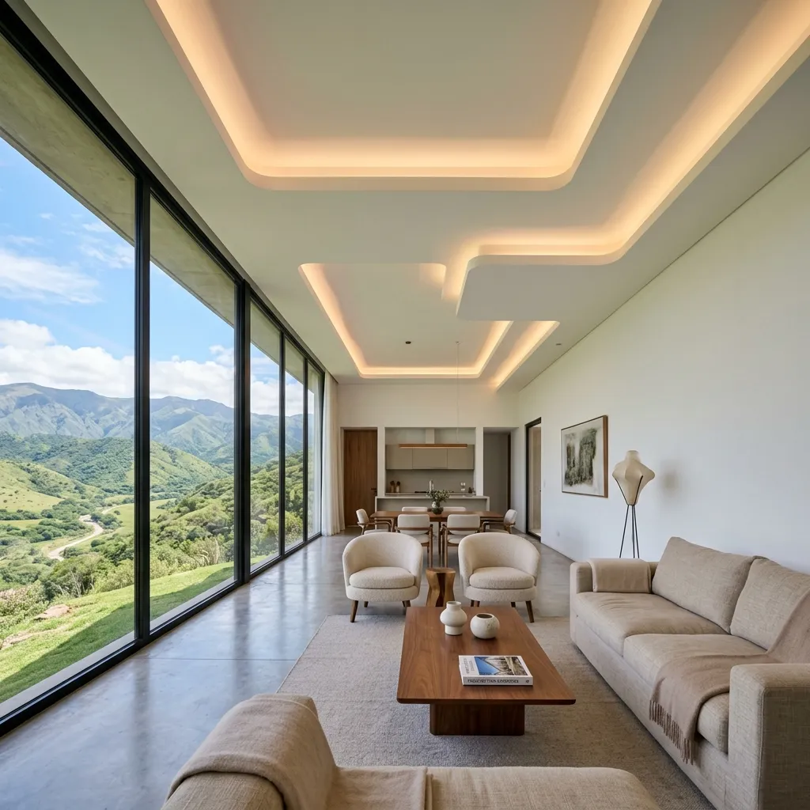
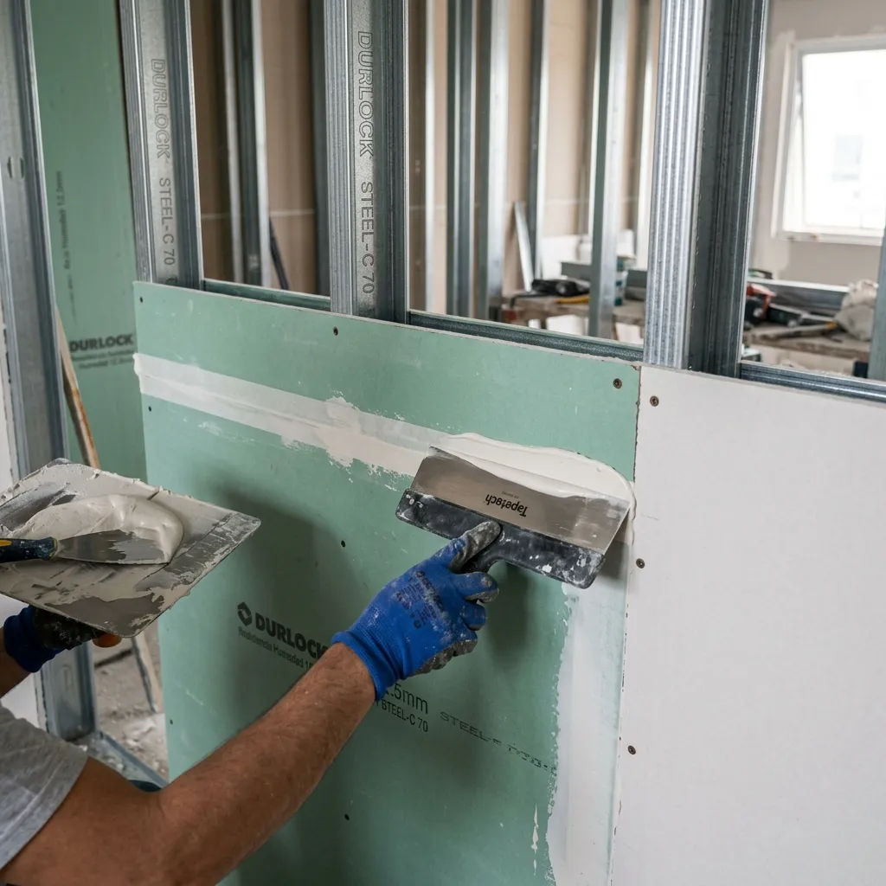

Construcción en seco
y colocación de Durlock
Transformamos ambientes residenciales y comerciales con la tecnología más limpia y eficiente del mercado. Creamos tabiques divisorios termoacústicos, cielorrasos junta tomada de diseño y ampliaciones rápidas sin escombros en Tucumán.
En San Miguel de Tucumán y Yerba Buena, realizamos obras profesionales de construcción en seco utilizando placas de yeso Durlock y placas cementicias de exterior. Resolvemos problemas de humedad, optimizamos la aislación térmica en el NOA y realizamos ampliaciones livianas en terrazas con dirección técnica de arquitectos.
Desliza y descubre la transformación
Olvídate de las paredes rústicas, el revoque descascarado y el desorden de una obra tradicional. El sistema de placas de yeso (Durlock) permite revestir y nivelar muros con un acabado 100% liso y perfecto en tiempo récord.


Sistemas Adaptados a Cada Proyecto
Explora la versatilidad de la construcción en seco. Selecciona un sistema para conocer detalles técnicos y usos recomendados.

Tabiques Divisorios de Roca de Yeso
Ideales para dividir ambientes sin sobrecargar la estructura de la vivienda. Construidos sobre perfiles de acero galvanizado con placas Durlock estándar de 12.5mm en ambas caras. Incorporamos lana de vidrio interna para asegurar la absorción sonora y el control de la temperatura entre habitaciones.
Especificaciones de Placas Normalizadas
Construimos bajo normas estrictas de seguridad. Solo utilizamos perfilería homologada de chapa de acero galvanizado de 0.52mm de espesor y placas Durlock certificadas IRAM.
| Tipo de Sistema | Placa Utilizada | Aislación / Estanqueidad | Aplicación Recomendada |
|---|---|---|---|
| Tabiquería Divisoria | Durlock Estándar (ST) 12.5mm | Lana de vidrio 50mm (38 a 44 dB) | Dormitorios, salas y divisiones generales |
| Zonas Húmedas | Durlock Resistente a Humedad (RH) | Aditivos hidrófugos siliconados | Baños, cocinas y lavaderos interiores |
| Cielorrasos Suspendidos | Durlock Cielorraso (9.5mm / 12.5mm) | Estructura Omega y Soleras | Gargantas de diseño y techos continuos |
| Barrera Cortafuegos | Durlock Resistente al Fuego (RF) | Fibras incombustibles (F-60 a F-120) | Salas de calderas, cocinas comerciales, medianeras |
| Fachadas Exteriores | Placa Cementicia (Superboard) 8-10mm | Barrera Tyvek hidrófuga de viento y agua | Fachadas modernas, aleros e intemperie |
Simulador de Presupuesto por m²
Calcula un valor estimado aproximado para tu obra colocado con materiales y mano de obra profesional en Tucumán.
Resolver Tus Dudas Técnicas
Durlock es el nombre comercial de las placas de yeso utilizadas principalmente en interiores para tabiquería divisoria, cielorrasos y revestimientos (sin función estructural). Por otro lado, el Steel Framing es un sistema constructivo estructural sismorresistente que utiliza perfiles de acero galvanizado pesado como la estructura portante de toda una vivienda de múltiples pisos.
Totalmente. Para zonas expuestas a la humedad constante (baños y cocinas) se instalan las **placas resistentes a la humedad (RH - verdes)** con aditivos de siliconas hidrófugas. Para la resistencia al fuego, disponemos de las **placas resistentes al fuego (RF - rojas)**, formuladas con fibras de vidrio incombustibles que retardan la propagación térmica de acuerdo con las normativas edilicias de Tucumán.
Una de las grandes ventajas de este sistema es la velocidad. Un tabique divisorio estándar de hasta 15 m² o un cielorraso en una habitación familiar típica se monta y se termina con masillado (junta tomada) en un plazo de **24 a 48 horas**, quedando inmediatamente listo para pintar.
Sí, es perfectamente seguro utilizando los tarugos y anclajes especiales para placas de yeso (como tarugos mariposa). Para elementos pesados como soportes móviles de televisores LED de gran tamaño o alacenas de cocina, realizamos refuerzos de madera o perfiles metálicos extras dentro del tabique durante la etapa de montaje de la estructura.